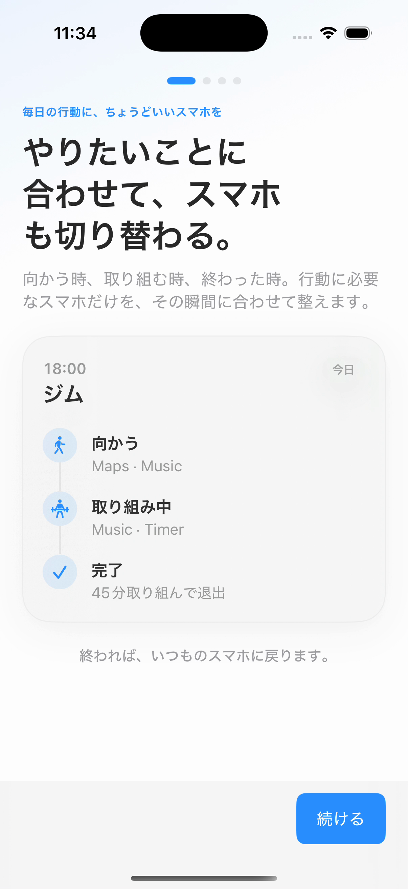
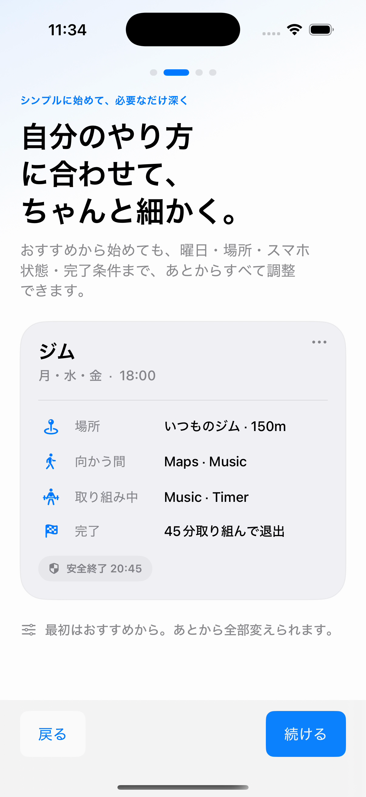
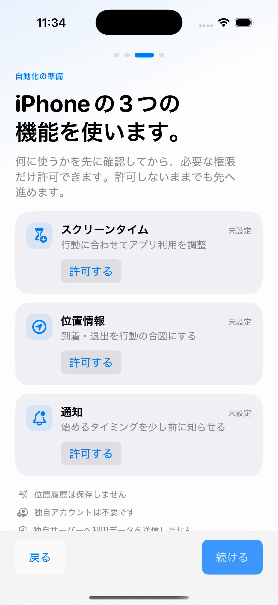
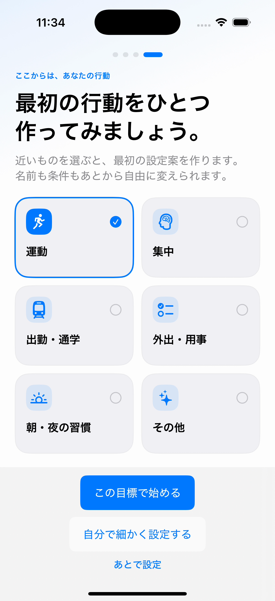
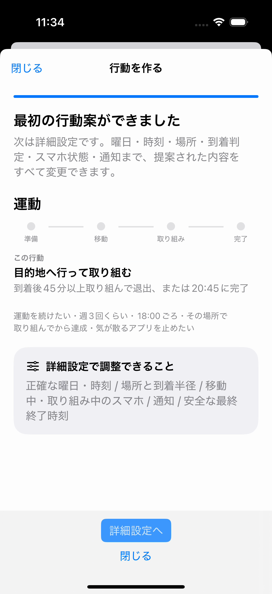
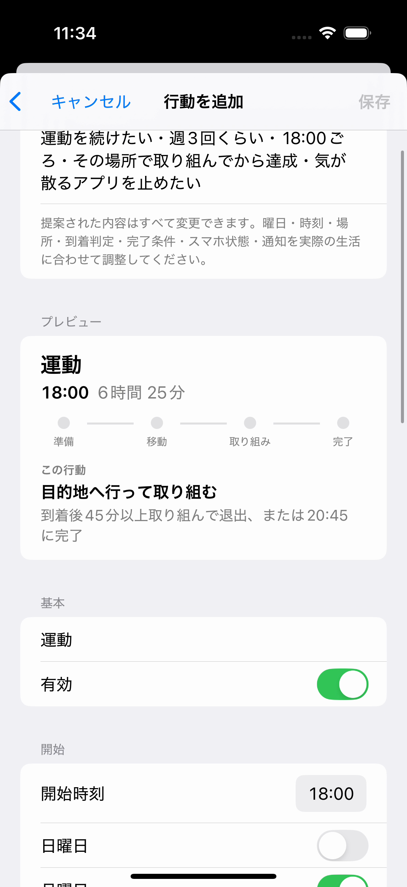

Production iOS UI Review
Screen Time Policy
Production Appを実際のiOS Simulatorで起動し、XCUITestが初回オンボーディングから最初の行動案、詳細設定まで操作した結果です。Web用に描き直したモックではありません。
Scenario 01
初回起動 → 目標選択 → 行動案 → 詳細設定
再生速度
オンボーディングは「価値 → 設定の深さ → 権限 → 最初の行動」の4ページ構成です。最後のページで「運動」を選択すると、同じ目標を聞き直さず、そのまま完了条件の設定へ進みます。
Key frames
主要画面






Implemented decision
説明書ではなく、使い始めるためのオンボーディングへ
Dedicated onboarding初回オンボーディングページ自体は維持
Outcome first設定項目より先に、行動中の体験を見せる
Progressive disclosure高い設定自由度は具体例で示し、詳細は必要時に展開
No duplicate questionオンボーディングで選んだ目標をGuided flowへ引き継ぐ
Capture provenance
このレビューの生成条件
- Source commit
06ffab5- Specification
2026-08-19_product_led_onboarding.md- ADR
ADR-0005_product_led_onboarding_and_progressive_disclosure- Simulator
- iPhone 16 Pro / iOS 18.4
- Scenario
- OnboardingUITests.testProductLedOnboardingHandsSelectedGoalIntoGuidedDraft
- Result
- 1 capture test / 0 failures
- Capture
- simctl recordVideo / H.264
- Deployment
- GitHub Pages / main branch deploy / GitHub Actionsなし